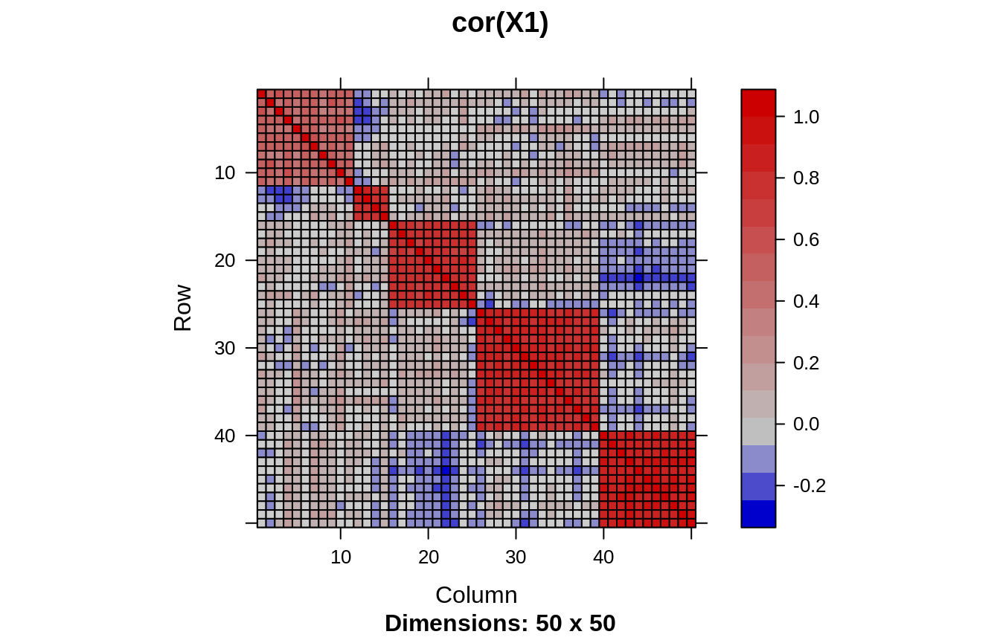
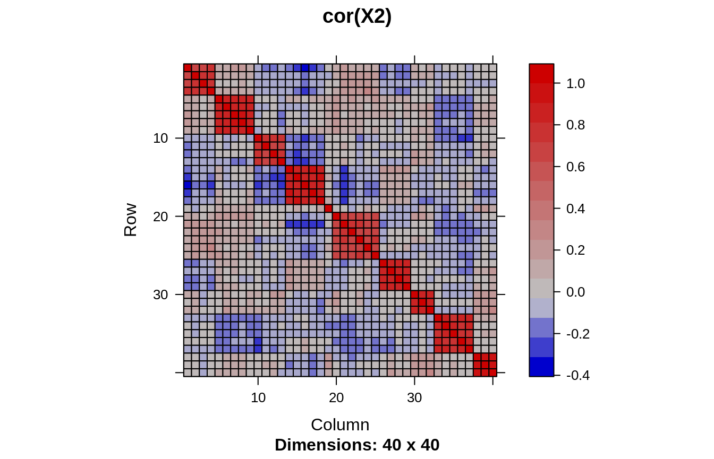
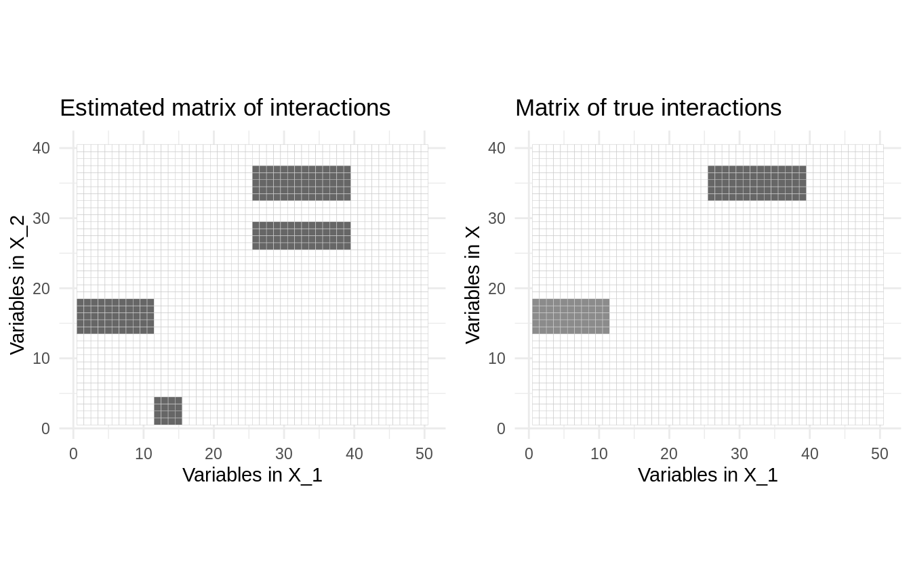
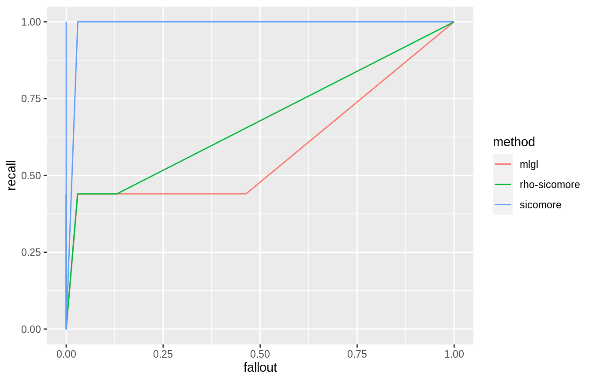
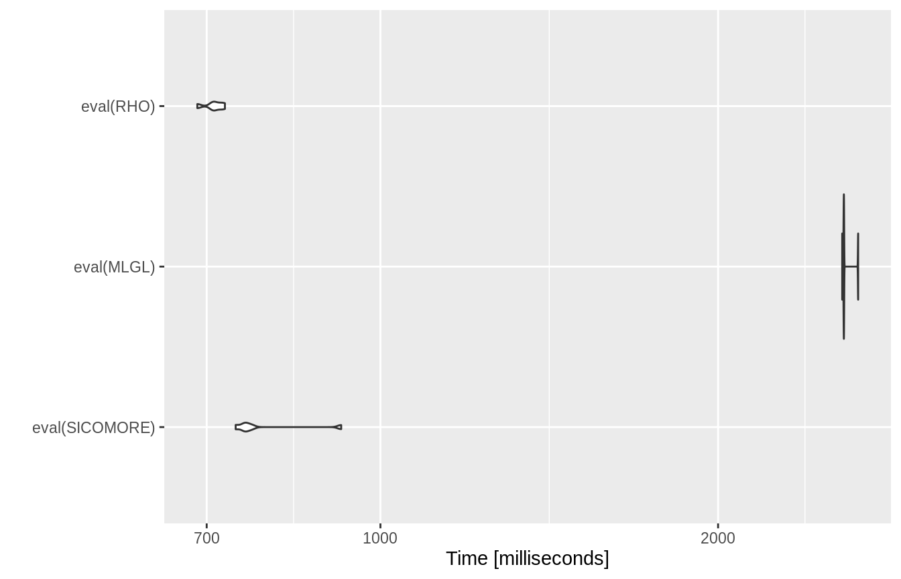

twoDataInteraction.RmdData generation goes pretty much just like in the example on an single data set (see the corresponding vignette), but two data sets are required. The sample size is common to both data sets:
Now, the first data set:
## FIRST DATA
p1 <- 50 # number of variables
K1 <- 5 # number of groups
rhos <- K1 %>%
runif(.5,.95) # correlation within groups
grp1.size <- rmultinom(1,p1,rep(p1/K1,K1)) ## group sizes
Sigma1 <- lapply(1:K1, function(k) return(matrix(rhos[k],grp1.size[k],grp1.size[k]))) %>%
bdiag()
diag(Sigma1) <- 1
grp1 <- rep(seq(grp1.size),grp1.size)
X1 <- Sigma1 %>%
as.matrix() %>%
rmvnorm(n, sigma=.) %>%
scale()And the second data set:
p2 <- 40
K2 <- 10
rhos <- K2 %>%
runif(.5,.95) # correlation within groups
grp2.size <- rmultinom(1,p2,rep(p2/K2,K2)) ## group sizes
Sigma2 <- lapply(1:K2, function(k) return(matrix(rhos[k],grp2.size[k],grp2.size[k]))) %>%
bdiag()
diag(Sigma2) <- 1
grp2 <- rep(seq(grp2.size), grp2.size)
X2 <- Sigma2 %>%
as.matrix() %>%
rmvnorm(n, sigma=.) %>%
scale()We show the matrix of empirical correlation exhibiting the block structure of both matrices:


Generation of the response vector and vector of coefficient is a little more tricky this time
First, we need first to compress each input matrices,
simple.effects.1 <- t(rowsum(t(X1), grp1)/tabulate(grp1))
simple.effects.2 <- t(rowsum(t(X2), grp2)/tabulate(grp2))Then, we compute the corresponding matrix of data interaction
interactions <- lapply(1:ncol(simple.effects.2), function(i) sweep(simple.effects.1, 1, simple.effects.2[, i], "*")) %>%
do.call(cbind,.)The parameters in the linear model originating the response variable are chosen such that there is \(s=2\) non-null interactions. The simple effect associated with these interactions are non-null too.
s <- 2 ## number of non-null interactions
# vector of true parameter at the correct level of the hierarchies
dim1 <- ncol(simple.effects.1)
dim2 <- ncol(simple.effects.2)
dim.inter <- dim1 * dim2
ind.inter <- sample(1:dim.inter, s)
theta.inter <- rep(0, dim.inter)
theta.inter[ind.inter] <- runif(s, min=2, max=4) ## interactions : sparse
theta.block.inter <- Matrix(theta.inter, dim1, dim2)
ind.simple.effects <- which(theta.block.inter!=0, arr.ind=TRUE)
theta1 <- rep(0, dim1)
theta1[ind.simple.effects[,1]] <- runif(nrow(ind.simple.effects), min=1,max=2)
theta2 <- rep(0, dim2)
theta2[ind.simple.effects[,2]] <- runif(nrow(ind.simple.effects), min=1,max=2)Finally we can draw the response vector
sigma <- 3
epsilon <- rnorm(n) * sigma
mu <- 3
y <- mu + interactions %*% theta.inter + simple.effects.1 %*% theta1 + simple.effects.2 %*% theta2 + epsilon
r2 <- 1-sum(epsilon^2) / sum((y-mean(y))^2)
r2## [1] 0.5993635Let us run the main sicomore function using Ward’s algorithm for the hierarchical clustering:
We can plot the most striking interactions with the method plot() and compare with the “true” model:
theta.full <- theta.block.inter[rep(1:nrow(theta.block.inter), table(grp1)),
rep(1:ncol(theta.block.inter), table(grp2))] %>%
as.matrix()
theta.true <- reshape2::melt(theta.full) %>%
ggplot(aes(Var1, Var2, fill=value)) +
geom_tile(show.legend=FALSE, colour = "grey80") +
scale_fill_gradient2(high = "grey40") +
theme_minimal() +
ggtitle("Matrix of true interactions") +
labs(x = 'Variables in X_1', y = 'Variables in X') + coord_fixed()
theta.estimated <- res$plot(main="Estimated matrix of interactions", threshold=.05)
cowplot::plot_grid(theta.estimated,theta.true, ncol=2)
To compare the 3 possible options “mlgl”,“hcar and”sicomore" in selection, we consider the performance in term of variable selection. So let us first define an simple function to compute basic statistics:
getSelPerf <- function(theta, theta.star) {
ones.true <- which(theta.star != 0)
zero.true <- which(theta.star == 0)
ones.hat <- which(theta != 0)
zero.hat <- which(theta == 0)
tp <- sum(ones.hat %in% ones.true)
tn <- sum(zero.hat %in% zero.true)
fp <- sum(ones.hat %in% zero.true)
fn <- sum(zero.hat %in% ones.true)
if ((tp+fn)==0) recall <- 0 else recall <- tp/(tp+fn)
if ((fp+tn)==0) fallout <- 0 else fallout <- fp/(fp+tn)
if ((tp+fp)==0) precision <- 0 else precision <- tp/(tp+fp)
return(c(recall=recall, fallout=fallout, precision=precision))
}And let us compare the 3 options in selection:
out.sicomore <- sicomore(y, list(X1, X2), selection="sicomore", verbose = FALSE)
out.mlgl <- sicomore(y, list(X1, X2), selection="mlgl", verbose = FALSE)
out.rho <- sicomore(y, list(X1, X2), selection="rho-sicomore", verbose = FALSE)We compute the matrix of interactions effects with the method getSignificance(effect = "theta") for each option:
theta.mlgl <- out.mlgl$getSignificance(effect = "theta")
theta.rho <- out.rho$getSignificance(effect = "theta")
theta.sicomore <- out.sicomore$getSignificance(effect = "theta")Finally we evaluate the ability to recover the true interaction term for several significance thresholds:
seq.thres <- seq(0,1,len=100)
res.sicomore <- sapply(seq.thres, function(threshold) getSelPerf(theta.sicomore>=threshold, theta.full)) %>%
t() %>%
data.frame()
res.mlgl <- sapply(seq.thres, function(threshold) getSelPerf(theta.mlgl>=threshold, theta.full)) %>%
t() %>%
data.frame()
res.rho <- sapply(seq.thres, function(threshold) getSelPerf(theta.rho>=threshold, theta.full)) %>%
t() %>%
data.frame()
res.df <- data.frame(method = rep(c("sicomore","mlgl","rho-sicomore"), each = 100), rbind(res.sicomore, res.mlgl, res.rho))
res.df %>%
ggplot(aes(x = fallout, y = recall, color = method)) +
geom_line()
SICOMORE <- expression(sicomore(y, list(X1, X2), selection="sicomore", verbose=FALSE))
MLGL <- expression(sicomore(y, list(X1, X2), selection="mlgl", verbose=FALSE))
RHO <- expression(sicomore(y, list(X1, X2), selection="rho-sicomore", verbose=FALSE))
bench <- microbenchmark(eval(SICOMORE) , eval(MLGL), eval(RHO), times = 5)